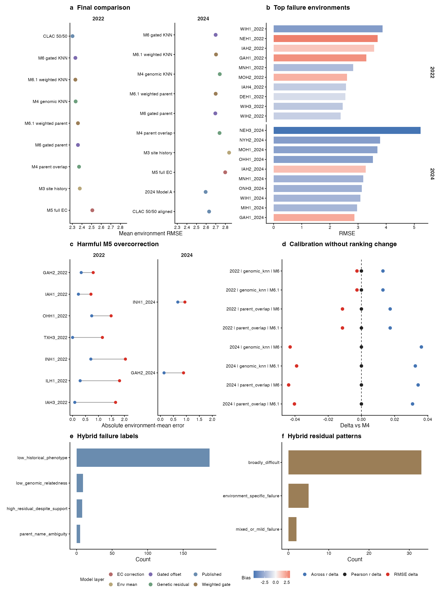

G2F M7 All Findings Visual Report
M7 findings are organized as a data-to-error-mechanism map: leaderboard, target-environment failures, overcorrection, calibration/ranking split, and hybrid-level failures.
Final model comparison
Leaderboard ranks hide the fact that environment mean, hybrid residual and gated offset consume different data layers.
67 rowsTop failure environments
Worst target environments combine high RMSE, directional bias and stress-shift context.
20 rowsHarmful overcorrection
M5 environmental correction can move predictions away from already-good M3 site-history estimates.
9 rowsCalibration without ranking change
M6 and M6.1 reduce RMSE by changing offsets while leaving within-environment Pearson r unchanged.
8 rowsHybrid failure labels
Most top hybrid failures are explained by sparse historical phenotype support rather than a single modeling defect.
200 rowsHybrid residual patterns
Top hybrids separate into broadly difficult versus environment-specific residual patterns.
40 rowsR manuscript overview

Hybrid failure counts
Top failure environments
| round | environment | rmse | bias | max_cusum_family | weather_shift_max_abs_z |
|---|---|---|---|---|---|
| 2022 | WIH1_2022 | 3.875427 | -3.383957 | radiation_depression | 4.612663 |
| 2022 | NEH1_2022 | 3.695574 | 3.178498 | drought | 3.423282 |
| 2022 | IAH2_2022 | 3.575067 | 1.319101 | drought | 2.193941 |
| 2022 | GAH1_2022 | 3.294647 | 2.744598 | heat | 3.935957 |
| 2022 | MNH1_2022 | 2.82591 | -2.186129 | radiation_depression | 2.910775 |
| 2022 | MOH2_2022 | 2.607978 | 1.894438 | humidity | 4.136404 |
| 2022 | IAH4_2022 | 2.573506 | -1.561192 | drought | 2.265375 |
| 2022 | DEH1_2022 | 2.552437 | -0.990128 | humidity | 1.895549 |
| 2022 | WIH3_2022 | 2.455487 | -1.758225 | radiation_depression | 2.775428 |
| 2022 | WIH2_2022 | 2.384089 | -1.440568 | radiation_depression | 2.578957 |
| 2024 | NEH3_2024 | 5.226164 | -4.959763 | drought | 2.700757 |
| 2024 | NYH2_2024 | 3.786157 | -3.336365 | humidity | 2.211945 |
Harmful overcorrection cases
| round | Env | m3_abs_error | m5_abs_error | abs_error_delta_m5_minus_m3 |
|---|---|---|---|---|
| 2022 | IAH3_2022 | 0.085824 | 1.659097 | 1.573273 |
| 2022 | ILH1_2022 | 0.292866 | 1.812476 | 1.51961 |
| 2022 | INH1_2022 | 0.70503 | 2.038827 | 1.333797 |
| 2022 | TXH3_2022 | 0.001009 | 1.150904 | 1.149895 |
| 2024 | GAH2_2024 | 0.138881 | 0.890705 | 0.751825 |
| 2022 | OHH1_2022 | 0.738767 | 1.487078 | 0.748311 |
| 2022 | IAH1_2022 | 0.225991 | 0.709261 | 0.48327 |
| 2022 | GAH2_2022 | 0.334072 | 0.796304 | 0.462232 |
| 2024 | INH1_2024 | 0.669553 | 0.943538 | 0.273985 |